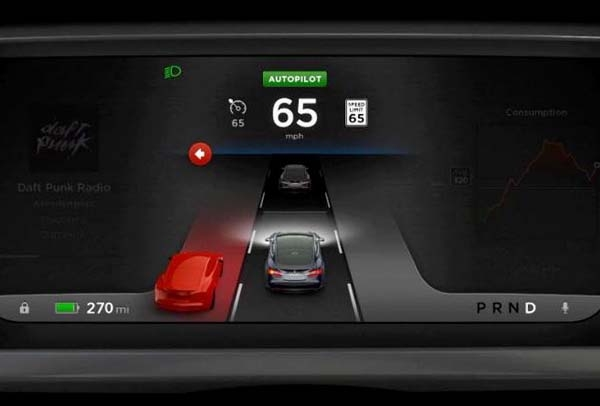

Autopilot combines a forward looking camera, radar, and 360 degree sonar sensors with real time traffic updates to automatically drive Model S on the open road and in dense stop and go traffic. Changing lanes becomes as simple as a tap of the turn signal. When you arrive at your destination, Model S will both detect a parking spot and automatically park itself. Standard equipment safety features are constantly monitoring stop signs, traffic signals and pedestrians, as well as for unintentional lane changes. Autopilot features are progressively enabled over time with software updates. The current software version is 6.1, adding traffic-aware cruise control, forward collision warning, and camera-enabled automatic high/low beam headlights.
